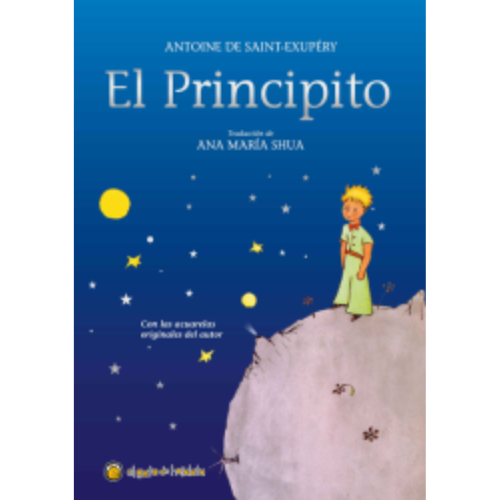
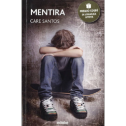

El Principito
El Principito, relata las aventuras de un niño que viaja entre planetas, aprendiendo sobre la naturaleza humana. En la Tierra, conoce a un piloto y descubre el valor de la amistad y el amor. La historia recuerda que "lo esencial es invisible a los ojos".
Autor/a: Antoine de Saint-Exupéry
Alas de hierro
Alas de Hierro, sigue la historia de un joven aviador en tiempos de guerra, atrapado entre el deber y sus sueños. Explorando el conflicto entre libertad y responsabilidad, esta novela de aventuras y autodescubrimiento refleja las luchas internas y los sacrificios del protagonista en busca de redención.
Autor/a: Rebecca Yarros
Alas de sangre
Alas de Hierro, es una historia ambientada en la brutal academia de Basgiath, donde Violet Sorrengail, una joven obligada a unirse a la peligrosa escuadra de jinetes de dragones, enfrenta desafíos mortales. En un mundo de alianzas traicioneras y magia, debe luchar por sobrevivir y demostrar su fortaleza.
Autor/a: Rebecca Yarros
El barco de Teseo
El Barco de Teseo, es un enigmático libro que sigue a un hombre sin recuerdos que aborda un misterioso barco, embarcándose en un viaje lleno de identidades ambiguas, conspiraciones y secretos. La historia explora la naturaleza de la identidad y el cambio, invitando al lector a resolver sus acertijos.
Autor/a: Ginés Aniorte
Fenris el elfo
Fenris el elfo, narra la historia de un elfo guerrero atormentado por un oscuro pasado y una naturaleza que no puede controlar. En un mundo de magia y razas en conflicto, Fenris lucha contra sus propios demonios y busca redención, explorando la lealtad, la soledad y el destino.
Autor/a: Laura Gallego
El arte de la guerra
El Arte de la Guerra, es un antiguo tratado sobre estrategia y tácticas militares que trasciende su aplicación en el campo de batalla. Este texto aborda la disciplina, la inteligencia y la adaptabilidad como claves para triunfar, ofreciendo principios que han influido en la guerra, la política y los negocios.
Autor/a: Sun Tzu
Stilton: En el reino de la fantasía
En el reino de la fantasía, de Geronimo Stilton, lleva al famoso ratón periodista a un mundo mágico lleno de dragones, hadas y otros seres fantásticos. Con un mapa misterioso y mucha valentía, Geronimo emprende una aventura épica para salvar el Reino de la Fantasía.
Autor/a: Elisabetta Dami
Vizcaya en guerra
Vizcaya en guerra, examina la historia de Vizcaya durante la Guerra Civil Española, explorando la resistencia, la vida cotidiana y los impactos del conflicto en la población vasca. A través de testimonios y documentación histórica, el libro ofrece una visión profunda sobre la supervivencia y el sufrimiento en tiempos de guerra.
Autor/a: Óscar González López
Los gatos no comen con tenedor
Los gatos no comen con tenedor, cuenta la historia de una familia excéntrica y divertida, narrada desde la perspectiva de un gato que observa sus conflictos y manías. Entre humor y lecciones de vida, el libro explora las relaciones familiares, la aceptación y el amor por quienes somos.
Autor/a: Alicia Roca

Mentira
Mentira, cuenta la historia de Xenia, una joven estudiante brillante que empieza una relación en línea con un chico llamado Marcelo. A medida que su conexión crece, Xenia descubre que todo podría ser una mentira, lo que la lleva a cuestionarse sobre la verdad, el amor y la confianza.
Autor/a: Care Santos
Mostaza
Mozartza, es una novela que sigue la historia de una familia vasca a lo largo de varias generaciones, entrelazando secretos, amores y traiciones. Ambientada en el País Vasco, la obra explora la identidad, la memoria y el impacto del pasado en el presente, desvelando profundos lazos familiares.
Autor/a: Mikel Alvira
Nada
Nada, relata la llegada de Andrea a Barcelona tras la Guerra Civil para estudiar en la universidad. En la casa de sus familiares, se encuentra atrapada en un ambiente opresivo y lleno de conflictos. A través de sus experiencias, Andrea busca libertad y sentido en un mundo desolado.
Autor/a: Carmen Laforet